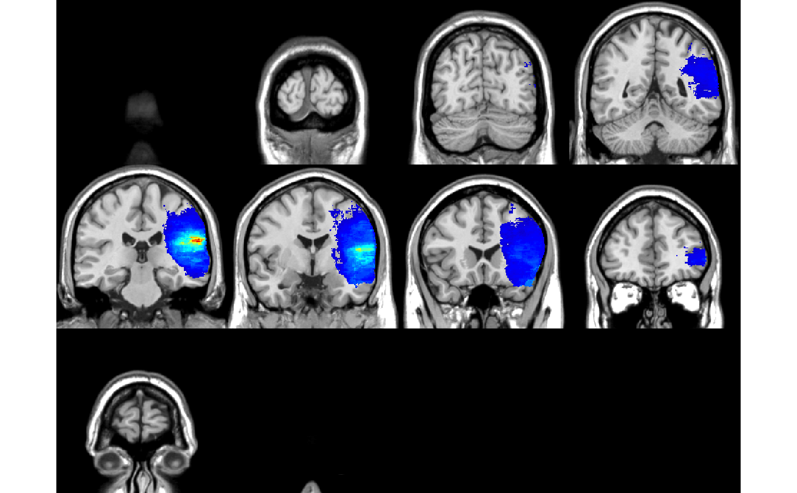

lesymap.RdLesymap uses univariate and multivariate methods to map
functional regions of the brain that, when lesioned,
cause specific cognitive deficits. It requires is
a set of binary lesion maps (nifti files) in template
space and the vector of corresponding behavioral scores.
Note, lesions must be already registered in template space,
use the built-in function
registerLesionToTemplate
or other ANTs tools to register lesions. Lesymap will check that
lesion maps are in the same space before running. For traditional
mass-univariate analyses (i.e., BMfast, ttest, etc.),
voxels with identical lesion patterns are grouped together in
unique patches. Patch-based analysis decreases the number of
multiple comparisons and speeds up the analyses. Multivariate
analysis are performed using an optimized version of sparse
canonical correlations (SCCAN, method='sccan')or support
vector regression (method='svr').
lesymap(lesions.list, behavior, mask = NA, patchinfo = NA, method = "sccan", correctByLesSize = "none", multipleComparison = "fdr", pThreshold = 0.05, flipSign = F, minSubjectPerVoxel = "10%", nperm = 1000, saveDir = NA, binaryCheck = TRUE, noPatch = FALSE, showInfo = TRUE, ...)
| lesions.list | list of antsImages, or a vector of filenames, or a single antsImage with 4 dimensions. |
|---|---|
| behavior | vector of behavioral scores or filename pointing to a file with a single column of numbers. |
| mask | (default=NA) binary image to select the area
where analysis will be performed. If
not provided will be computed automatically
by thresholding the average lesion map at
|
| patchinfo | (default=NA) an object obtained with the
|
| method | what analysis method to use to run, one of 'BM', 'BMfast', 'ttest', 'welch', 'regres', 'regresfast', 'regresPerm', 'sccan' (default) or 'svr',.
|
| correctByLesSize | whether to correct for lesion size in the analysis. Options are "none", "voxel", "behavior", "both":
|
| multipleComparison | (default='fdr') method to adjust p-values.
Standard methods include |
| pThreshold | (default=0.05) threshold statistics at this p-value (after corrections or permutations) |
| flipSign | logical (default=FALSE), invert the sign in the statistics image. |
| minSubjectPerVoxel | (default='10%') remove voxels/patches with lesions in less than X subjects. Value can be speficifed as percentage ('10%') or exact number of subjects (10). |
| nperm | (default=1000) number of permutations to run when necessary. This is used mostly for univariate analyses, while multivariate methods have their own permutation arguments. Check the documentation of each method to know more. |
| saveDir | (default=NA) save results in the specified folder. |
| binaryCheck | logical (default=FALSE), make sure the lesion matrix is 0/1. This will help if lesion maps are drawn in MRIcron or other software which label lesioned voxel with value 255. |
| noPatch | logical (default=FALSE), if True avoids using patch information and will analyze all voxels. It will take longer and results will be worse due to more multiple comparison corrections. This argument is ignored when performing multivariate analyses, SCCAN or SVR, for which all voxels are always used. |
| showInfo | logical (default=TRUE), display time-stamped info messages |
| ... | arguments that will be passed down to other functions (i.e., sparsness=0.045) |
The following objects are typically found in the returned list:
stat.img - statistical map
rawWeights.img - (optional) raw SCCAN weights
pval.img - (optional) p-values map
zmap.img - (optional) zscore map
mask.img - mask used for the analyses
average.img - map of all lesions averaged,
produced only if no mask is defined.
callinfo - list of details of how you called lesymap
outputLog - terminal output in a character variable
perm.vector - (optional) the values obtained from each permutation
perm.clusterThreshold - (optional) threshold computed
for cluster thresholding
perm.FWERthresh - (optional) threshold computed for FWERperm
thresholding
patchinfo - list of variables describing patch information:
patchimg - antsImage with the patch number each voxels belongs to
patchimg.samples - antsImage mask with a single voxel per patch
patchimg.size - antsImage with the patch size at each voxel
patchimg.mask - the mask within which the function will look for patches
npatches - number of unique patches in the image
nvoxels - total number of lesioned voxels in mask
patchvoxels - vector of voxel count for each patch
patchvolumes - vector of volume size for each patch
patchmatrix - the lesional matrix, ready for use in analyses.
Matrix has size NxP (N=number of subjects, P=number of
patches)
Several other parameters can be specified to lesymap() which will be passed to other called fuctions. Here are some examples:
permuteNthreshold - (default=9) for Brunner-Munzel tests
in method='BMfast' or method='BM'.
Voxels lesioned in less than this number
of subjects will undergo permutation-based
p-value estimation. Useful because the BM test
is not valid when comparing groups with N < 9.
Issue described in:
Medina (2010)
clusterPermThreshold - threshold used to find the optimal cluster size when
using multipleComparison='clusterPerm'.
alternative - (default='greater') for two sample tests (ttests and BM).
By default LESYMAP computes single tailed p-values assuming
that non-lesioned 0 voxels have higher behavioral scores.
You can specify the opposite relationship with alternative='less'
or compute two tailed p-values with alternative='two.sided'.
covariates - (default=NA) enabled for method = 'regresfast'.
This will allow to model the effect of each voxel
in the context of other covariates, i.e., formula
"behavior ~ voxel + covar1 + covar2 + ...".
I,.e., lesymap(lesions,behavior, method='regresfast',
covariates=cbind(lesionsize, age)).
If you choose permutation based thresholding with covariates, lesymap
will use the Freedman-Lane method for extracting the unique effect of
each voxel (see Winkler 2014, Freedman 1983)
template - antsImage or filename used for plotting the results if a saving
directory is specified (see saveDir)
v - (default=1) which voxel to record for permutation based thresholding.
Normally the peak voxel is used (1), but other voxels can be recorded.
See Mirman (2017)
for this approach.
lesydata = file.path(find.package('LESYMAP'),'extdata') filenames = Sys.glob(file.path(lesydata, 'lesions', 'Subject*.nii.gz')) behavior = Sys.glob(file.path(lesydata, 'behavior', 'behavior.txt')) template = antsImageRead( Sys.glob(file.path(lesydata, 'template', 'ch2.nii.gz'))) lsm = lesymap(filenames, behavior, method = 'BMfast')#> 10:03:19 Running LESYMAP 0.0.0.9221 #> 10:03:19 Checking a few things... #> 10:03:19 Loading behavioral data... 131 scores found. #> 10:03:19 Filenames as input, checking lesion values on 1st image... #> 10:03:19 Searching voxels lesioned in >= 10% subjects... 326828 found #> 10:03:52 Computing unique patches... #> 10:04:09 Found 195102 patches in 326828 voxels - 1.7 times more voxels #> 10:04:09 Using existing lesion matrix... 131x195102 #> 10:04:09 Checking matrix values are binary 0/1... #> 10:04:09 Running analysis: BMfast ... #> 10:04:12 Correcting p-values: fdr ... #> 10:04:12 Preparing images... #> 10:04:12 Logging call details... #> 10:04:12 Done! 53.4 secs#> NULL